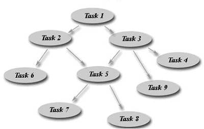

Edward Harned (eh at coopsoft dot
com)
Senior Developer, Cooperative Software Systems, Inc.
February, 2010 [updated August, 2011]
What is Fork-Join?
Think of a fork in the road where each path eventually comes back together — joins.
Fork-Join breaks an application into several parts for parallel processing and joins the results at the end.
Figure 1: Fork-Join Structure

Let’s say we have an array of one thousand numbers. We need to do a procedure on each of these numbers and add the total.
Listing 1: Array Processing
|
|
If the procedure takes one second (wall-clock time) to complete, then it is going to take one thousand seconds (over 16½ minutes) to complete this task.
Fork-Join could
- separate (fork) the large array into ten arrays of one hundred elements each,
- processes each array on a separate CPU, and
- join the results when finished.
That would take one hundred seconds (just over 1½ minutes), one tenth of the original time. The more CPU's available, the faster the result.
This is what scientific computing is all about — simultaneously processing humongous amounts of data on as many CPU’s as available. This abstraction closely resembles the standard scientific model of Divide-and-Conquer.
Divide-and-Conquer is a natural paradigm for parallel algorithms. After dividing a problem into two or more sub-problems, the method solves the sub-problems in parallel. Typically, the sub-problems are solved recursively and thus the next divide step yields even more sub-problems for solving in parallel.
Figure 2: Divide-and-Conquer

Problems using Fork-Join scientific model for everyday applications
Creating tasks is not the problem; they’re only objects. The problem is a high number of threads processing the tasks when those tasks need:
Connections
Accessing remote services (DBMS, messaging, and many others) requires a connection to the remote service. Generally, the remote services use a thread to handle the connection and that requires memory, context switching, synchronization, and coordination. The more connections to the service, the more resources the service needs, and the less connections available for other tasks in the JVM. That affects every user.Locks
Locks are a killer to high performance. Dead/live locks, priority inversion, starvation, convoying and overhead (that goes up exponentially with the length of the list of waiting tasks) are some of the problems of using locks.Semaphores
The more threads that want a permit concurrently, the more threads that must wait for permit availability. This brings us back to all the problems of using locks.Cache coherency
When multiple processors access/update the same variable inside a cache line, (block of data copied from main memory containing many fields), the memory unit may invalidate the cache line. That not only slows down an application, it may affect other application as well.Extensive memory
The more objects or the bigger the objects, the more memory. The more active threads handling the tasks, then the more memory in use. Naturally, it follows that large memory tasks need throttling.The need to play nice
You’re application may not be the only application running on the computer. When one application hogs the resources, everyone feels the pain. Playing nice with others goes back to what we all learned in childhood. The same holds true when developing software that does not run as a standalone application.
The theme of multi-core development is to keep contention, tasks competing for the same resources, to a minimum.
If the dynamic decomposition paradigm of Divide-and-Conquer suits your needs, then read this article about the high performance DSE version of Tymeac. Otherwise a Functional Forking Framework may better suit your needs.
Functional Forking Framework
Java™SE / ME multi-core applications as well as Android™ applications that cannot use the Divide-and-Conquer model, do not process large arrays of numbers, or do not have a compute intensive structure need a functional forking framework for parallelizing applications. Specifically, they need to fork the work into its functional components rather than decompose an array into identical subtasks.
Figure 3: Functional Forking Framework
A functional forking framework has two essential attributes. It must:
- Limit contention.
- Be simple to use or embarrassingly parallel.
Limit Contention
Keeping the number of active, competing threads to an absolute minimum is paramount. The easiest way to limit thread contention is to use thresholds for each thread pool servicing a queue of tasks. See this article on High Performance Priority Queues in Java SE for an example of how using Wait Lists can conserve threading resources.
Reusing resources rather than acquiring new copies of resources is a winner all-around. We need to consider not only the task code, but the resource management code as well.
Take the example of a task needing to access a database that requires a [java.sql.]statement. By using a queue of requests, the task code can share the same statement for many accesses rather then acquiring a new statement for each access. Sharing a statement is a huge saving in overhead and limits contention within the management code.
What is embarrassingly parallel?
Embarrassingly parallel algorithms are those that can solve many similar but independent tasks simultaneously with little to no need for coordination between the tasks. These kinds of problems have such easy parallelization that one is almost "embarrassed" to talk about how simple it is to get many processors working efficiently.
An embarrassingly parallel solution may easily fork into a number of completely independent components, each executing on a separate processor.
Figure 4: Embarrassingly Parallel
For example:
A business might need an automated price quote system. To develop a quote, the system needs the item’s base price (price database), the customer’s discount for items and shipping (customer database), and basic shipping costs (shipper database.)Traditionally, the program accesses each database serially, waiting for each access to complete before moving to the next access.
In a parallel system, the program Forks() the request into three queues, each serviced by a thread pool, waits until the last access finishes and Joins() the results together.
Figure 5: Price Quote
The above price quote is an example of a synchronous request, where the caller waits for completion. It is only a small step forward to add support for the asynchronous or autonomous request, where the caller does not wait for completion.

There are many, many situations where forking the work into its components is desirable:
- Take a game application where we can fork an event into separate components. The advantage here is excitement; the more event segments taking place concurrently, the more interesting the game.
- Take an application with multiple animations where we can fork each animation to run on its own processor.
- Take an image processing operation where every pixel in an image needs to have its color reversed. The framework can easily distribute the image data to multiple tasks that can work independently of each other.
- Take a financial institution where re-valuing a portfolio involves components that communicate with various markets around the world.
- Take a health care application where various tests are components in a diagnosis.
It’s an endeavor to see just what application cannot use parallelization with a functional forking framework.
How would this framework look in a Java™ application?
A framework for forking the request into its functional components needs to:
Know the components (Queues) for each request operation (Function.) A simple Class containing a String Function name and a list of the associated Queues is basic Java™ programming.
Listing 2: Function Class
public class Function {private String name; // Function name
private Queue[] que; // Queues for this Function
}
Place the request (containing the input objects) into each of the queues returning an object array to the caller or ignoring the returned objects.
Listing 3: Put in Queue
public Object[] fork(Queue[] que, Object request) {Object[] return_obj = new Object[] {null, null, null};
for (int i = 0; i < que.length; i++) {
putInQueue(que[i], return_obj [i], request);
}return return_obj;
}
Wait for completion/timeout or do not wait.
Listing 4: Wait/noWait
public boolean join(Object[] obj) {/* when all elements are non-null, return true
* wait for a while
* after an interval, return false
*/
}
Return the results to the caller or ignore the objects
Figure 6: Return to Caller
![Return Object[]](i/back.gif)
To build this framework we would:
- Need to maintain the actual task code that does the work
- Need to maintain a list of Queues and Functions
- Need to maintain a “start up” class that loads the Queues and Functions into memory
(1) The code that does the work should look like this:
Listing 5: Work Code
public static Object main(Object obj) {}
A main() method that accepts an object (the input from the caller) and returns an object (the result of the work.)
(2) We could maintain the Queues and Functions as objects within a simple List Class.
(3) Start up could simply load the List Classes into memory with a new (List Class) and start the threads for each Queue.
How a simple call could look:
Listing 6: Simple Call
Framework fw = new Framework();// For each call:
Function func = fw.getFunction(name);
Object[] back = func.fork(request};